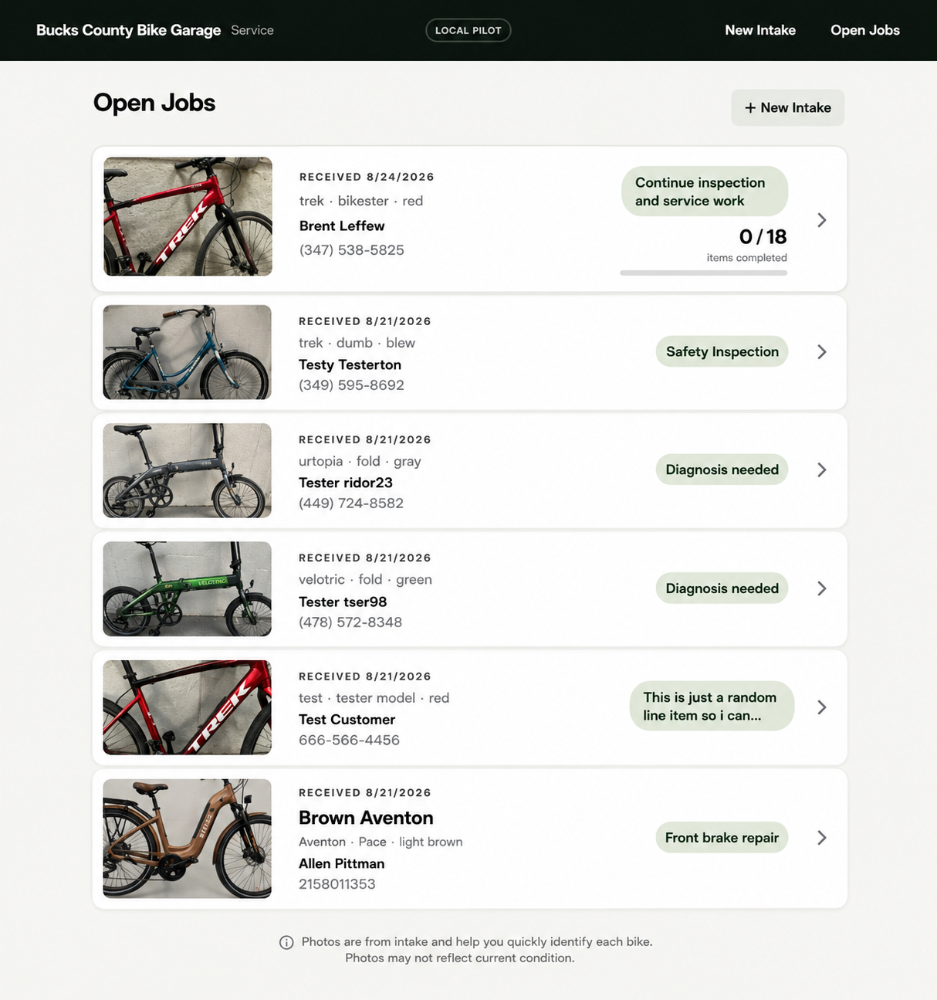

Working software · Production pilot · Product development
PedalFish
An iPad-first operating system for bicycle service work, built from the real workflow of getting a customer-owned bike into a shop, deciding what it needs, completing authorized work, and getting it safely back to the customer.
Where it came from
It started as BCBG Service Intake. It became a service operating system.
The original problem was deliberately narrow: replace an awkward paper intake process at Bucks County Bike Garage with a fast, useful iPad workflow. Building and using that workflow exposed the larger problem—intake is only the beginning. The shop needs to understand where every repair stands, what is blocking it, who owes the next action, and what must happen to move it forward.
That working system is now PedalFish. The product is being developed through real bicycle-service operations rather than as a speculative shop-software exercise.
Intake → Inspection / Diagnosis → Customer Approval when needed → Authorized Work → Final QC → Customer Notification → Waiting for Pickup → Payment Confirmation → Closed
Model the work, not the software modules
The core domain is Customer → Bike → Service Job → Service Lines. Findings, tasks, approvals, photos, communications and historical evidence exist around the work instead of forcing mechanics to translate their day into generic CRM or ticketing concepts.
Derive what needs attention
Operational facts are the source of truth. Rather than asking the operator to maintain a generic status manually, PedalFish derives the repair's current state, blockers and next useful action from the work itself.
Keep customer decisions trustworthy
Intake acknowledgements, presented work, approvals, customer notifications and closure events preserve what was actually recorded at the time. Private mechanic notes, supplier details and internal costs stay out of customer-facing communication.
Different work can behave differently
A structured tune-up can use an inspection checklist while a simple service line can move through Ready → In progress → Complete. The workflow should fit the work rather than make every repair conform to one process.
Current state
Beyond the local prototype
PedalFish now has hosted Postgres persistence, private service-photo storage, authentication and shop membership boundaries, production deployment, operational archive controls, and a canonical production domain. The application has been repeatedly exercised through the complete service lifecycle, with product changes validated through realistic iPad acceptance before release.
pedal-fish.com ↗
The operator experience
The interface should answer the operational question
A mechanic returning to a repair after several days should not need to reconstruct what happened from memory. The system should make the current state, blocker and next useful action obvious from authoritative job facts.

An earlier Open Jobs view from the product's BCBG phase. The product direction has since expanded from a job list toward a shared operational model that can support work queues, Kanban-style views, reporting, automation and future intelligence.
Product direction
From workflow software toward shop intelligence
The same derived operational truth that tells one mechanic what to do next can support broader views across all work in the shop: repair-resume guidance, queues, Kanban-style flow, wall displays, reporting, notifications and automation.
This is also the foundation for the longer-term Manager AI idea: an intelligence layer should not invent its own interpretation of the business. It should reason from the same operational facts the working product already uses.
How it is being built
Product development inside the operating environment
PedalFish is also an experiment in a different way of building software. Workflow observations become product decisions; small issues become controlled changes; automated validation protects the domain; and consequential workflow changes return to a human iPad acceptance checkpoint before production. The product and the delivery process are evolving together.
This is a selected public view. Customer data, private operational records and implementation-sensitive details are intentionally omitted.